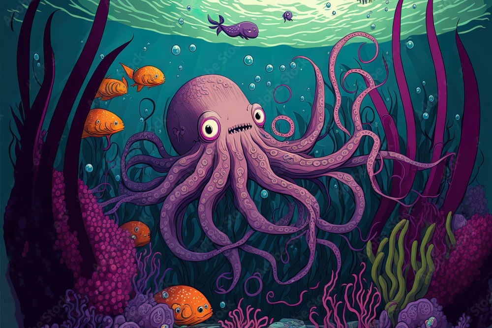

Todos os polvos são predadores e alimentam-se de peixes, crustáceos e outros invertebrados, que caçam com os braços e matam com o bico quitinoso. Ao longo do tempo, foram selecionados polvos com visão binocular e olhos com estrutura semelhante à do órgão de visão do ser humano, tendo percepção de cor. Tais características auxiliam esses animais na caça.
Defesa
A maioria dos polvos é capaz de liberar uma densa nuvem de tinta, que os ajuda a escapar de predadores. A principal substância da tinta é composta por melanina que também dá a coloração dos cabelos e pele dos seres humanos. A nuvem de tinta também possui cheiro, sendo capaz de confundir predadores como tubarões que dependem muito do olfato para localizar a presa.